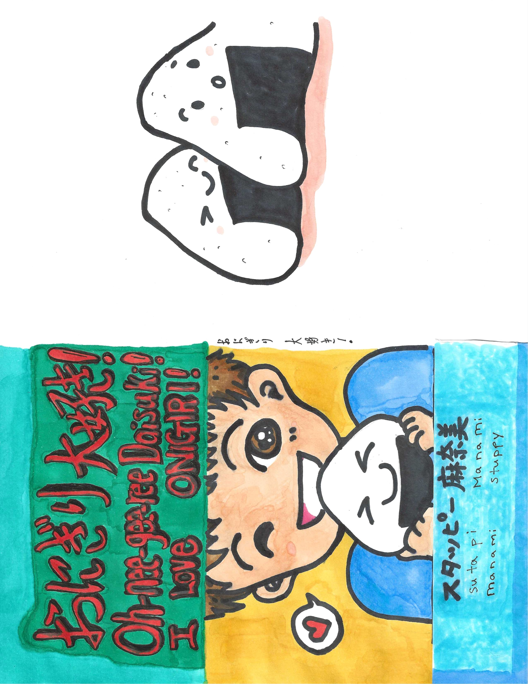
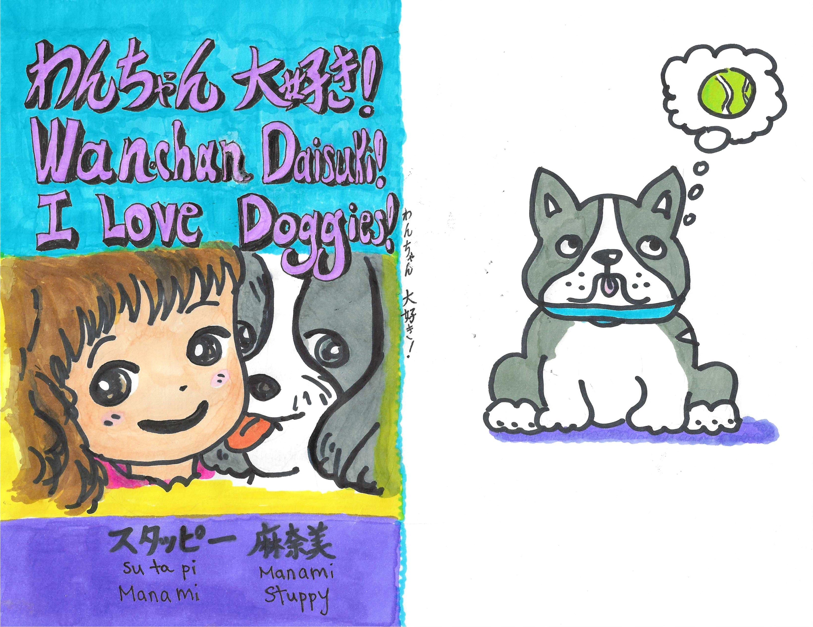
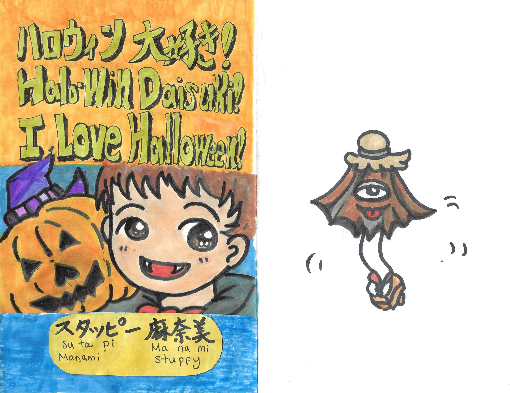

I LOVE Onigiri!
Japanese-English bilingual children’s book about onigiri, family, food, and visiting grandparents in Japan.
おにぎり、家族、日本の食文化、おじいちゃん・おばあちゃんとの時間をテーマにした日本語・英語バイリンガル絵本。
Japanese Bilingual Author ・ Chibi Artist ・ Manga-Inspired Illustrator
日本語バイリンガル作家・イラストレーター・漫画アーティスト
Cozy Japanese-English Books & Art
Welcome! I’m Manami Stuppy, a Japanese bilingual author and illustrator creating Japanese-English books, cute chibi art, manga-inspired comics, and warm Japanese culture projects.
こんにちは。Manami Stuppyです。日本語と英語のバイリンガル絵本、かわいいチビアート、 漫画風イラスト、日本文化を感じる作品を制作しています。
My work is for families, Japanese language learners, book lovers, anime and manga fans, and anyone who enjoys cozy, cute, and culture-filled art.
日本語・英語バイリンガル絵本
My books introduce Japanese language, Japanese food, family life, seasonal events, and cozy cultural moments through simple bilingual storytelling.

Japanese-English bilingual children’s book about onigiri, family, food, and visiting grandparents in Japan.
おにぎり、家族、日本の食文化、おじいちゃん・おばあちゃんとの時間をテーマにした日本語・英語バイリンガル絵本。

A sweet Japanese-English bilingual book about rescuing a puppy and welcoming her into the family.
子犬を保護し、家族の一員として迎える心あたたまる日本語・英語バイリンガル絵本。

A cute bilingual Halloween book for families, children, and Japanese language learners.
家族みんなで楽しめる、かわいいハロウィンの日本語・英語バイリンガル絵本。
チビアート・かわいいイラスト・日本文化
I create cute, warm, nostalgic illustrations inspired by Japanese culture, animals, food, children, family, and everyday funny moments.
日本文化、動物、食べ物、子ども、家族、日常の小さな面白い瞬間から生まれる、 あたたかくてかわいい作品を描いています。
制作ノート
My bilingual books use familiar Japanese words like onigiri, doggies, family, and seasonal celebrations to make learning feel warm and natural.
My comic work is inspired by Japanese 4-panel manga, everyday humor, nostalgia, and small emotional moments.
I create personalized cute illustrations for families, pets, seasonal gifts, and Japanese-inspired keepsakes.